Inhalt Index DeskTop Bronstein

 Differentialgleichungen Gewöhnliche Differentialgleichungen Differentialgleichungen höherer Ordnung und Systeme von Differentialgleichungen Lösung linearer Differentialgleichungen mit konstanten Koeffizienten
Differentialgleichungen Gewöhnliche Differentialgleichungen Differentialgleichungen höherer Ordnung und Systeme von Differentialgleichungen Lösung linearer Differentialgleichungen mit konstanten Koeffizienten


Das Aufsuchen der allgemeinen Lösung der homogenen Differentialgleichung (9.40a) mit 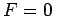, d.h.
| Pn(D)y = 0 | (9.41a) |
| 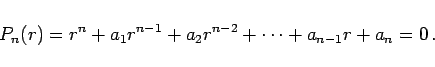 | (9.41b) |
Jede Wurzel ri liefert eine Lösung erix der Gleichung 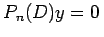. Tritt eine Wurzel ri mit der Vielfachheit k auf, dann sind 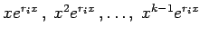 ebenfalls Lösungen. Die Linearkombination dieser aller Lösungen ergibt die allgemeine Lösung der homogenen Differentialgleichung:
| 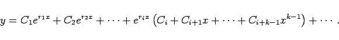 | (9.41c) |
Wenn die Koeffizienten ai reell sind, können komplexe Wurzeln der charakteristischen Gleichung nur paarweise konjugiert komplex auftreten. In diesem Falle sind z.B. für 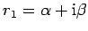 und 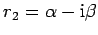 in den betreffenden Gliedern der allgemeinen Lösungen die Funktionen er1x und er2x durch 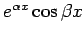 und 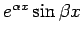 zu ersetzen. Die dabei entstehenden Ausdrücke der Form 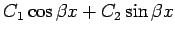 können auch in der Form 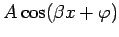mit den Konstanten A und  dargestellt werden.
dargestellt werden.
| Beispiel |
|
Zur Differentialgleichung y(6)+y(4)-y''-y=0 gehört die charakteristische Gleichung r6+r4-r2-1=0 mit den Wurzeln 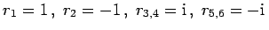. Die allgemeine Lösung kann in zwei Formen angegeben werden: 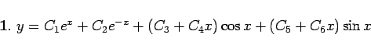
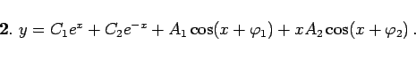
|